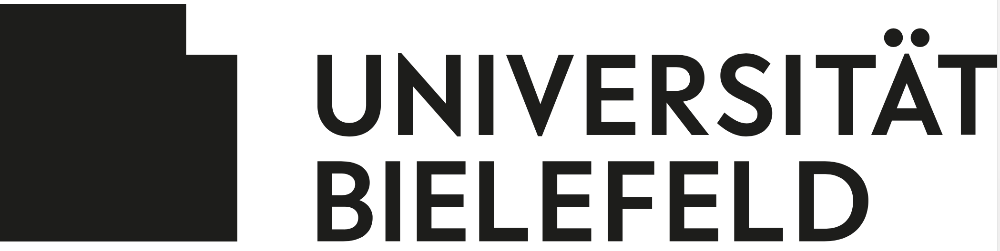

Experience
Working Experience
Since 06/2022: Research Associate - DZHW
| Employer: | German Centre for Higher Education Research and Science Studies (DZHW) |
| Period: | Since 06/2022 |
| Place: | Hanover, DE |
| Role: | Research Associate |
| Project: | Hierarchies in Cooperative Research (third-party funding-application preparation, DFG, Individual Research Grants) |
| Project content: | Hierarchies have the potential to both enhance and effectiveness of research teams. The research project Hierarchies in Collaborative Research aims to identify the determinants of hierarchies in collaborative research. research, the determinants of whether, why and when different forms of and when different forms of hierarchy can impair the effectiveness of teams. effectiveness of teams (mediated by cooperation problems). impair the effectiveness of teams. The data basis for the study will be the survey data of data from staff members of Collaborative Research Centres and Excellence clusters will be analysed. |
| Responsibilities: | Phase 1: Preparation of the proposal
Phase 2: Writing the proposal
|
01/2022 – 05/2022: Research Associate - DZHW
| Employer: | German Centre for Higher Education Research and Science Studies (DZHW) |
| Period: | 01/2022 – 05/2022 |
| Place: | Hanover, DE |
| Role: | Research Associate |
| Project: | Domain Data Protocols for Empirical Educational Research a Contribution to Standardizing and Increasing the Quality of Research Data Management (DDP) |
| Project content: | The collaborative project DDP aimed to develop so-called domain data protocols for handling research data in educational research. Domain data protocols are public and referencable sample standard protocols for data management. They are intended to support researchers in empirical educational research in producing quality-assured and re-usable data. |
| Responsibilities: |
|
02/2019 – 05/2022: Research Associate - DZHW
| Employer: | German Centre for Higher Education Research and Science Studies (DZHW) |
| Period: | 02/2019 – 05/2022 |
| Place: | Hanover, DE |
| Role: | Research Associate |
| Project: | Determinants and effects of cooperation in homogeneous and heterogeneous research clusters (DEKiF) |
| Project content: | The joint project DEKiF investigated the question of which internal cooperation problems occur in (inter-)disciplinary research clusters, which causes and framework conditions are decisive for this and how cooperation problems affect the success of research clusters. At the same time, it was determined which strategies research clusters use to solve or prevent problems that arise. |
| Responsibilities: |
|
11/2018 – 01/2019: Research Associate - DZHW
| Employer: | German Centre for Higher Education Research and Science Studies (DZHW) |
| Period: | 11/2018 – 01/2019 |
| Place: | Hanover, DE |
| Role: | Research Associate |
| Project: | Continuous operation of the Research Data Centre for Higher Education and Science Research (FDZ-DZHW) |
| Responsibilities: | Editing and anonymisation of guided interview transcripts of the research project Performance Evaluation in Appointment Procedures - the changing tradition of hiring professors in academia (LiBerTas) |
| Period: | 10/2010 – 09/2012 |
| Role: | Freelance artist and graphic designer |
Education
02/2019 – (expected) 06/2023: Ph.D. Sociology, LUH Hanover
| Degree: | Ph.D. Sociology |
| University: | Gottfried Wilhelm Leibniz University of Hanover |
| Period: | 02/2019 – 06/2023 |
| Place: | Hanover, DE |
| Thesis: | Research collaborations - problems and determinants of success |
| Grade: | summa cum laude |
10/2016 – 09/2018: M.A. Sociology, Bielefeld University
|  | |
| Degree: | M.A. Sociology |
| University: | Bielefeld University |
| Period: | 10/2016 – 09/2018 |
| Place: | Bielefeld, DE |
| Thesis: | Das Kunstmuseum – Vom bildungsbürgerlichen Tempel zum sozial diversifizierten Lern- und Erlebnisort? Eine empirische Aktualisierung der Bourdieuschen Kunstsoziologie mittels multipler Faktorenanalyse |
| Grade: | 1.2 |
10/2013 – 09/2016: B.A. Sociology, HU Berlin
| Degree: | B.A. Social Science |
| University: | Humboldt University of Berlin |
| Period: | 10/2013 – 09/2016 |
| Place: | Berlin, DE |
| Thesis: | Soziale Ungleichheit und kultureller Geschmack – Eine empirische Überprüfung der Sozialtheorie Pierre Bourdieus mittels der multiplen Korrespondenzanalyse |
| Grade: | 1.4 |
10/2012 – 09/2015: B.A. Artistic teacher training, UdK Berlin
| Degree: | B.A. Artistic teacher training |
| University: | Berlin University of the Arts |
| Period: | 10/2012 – 09/2015 |
| Grade: | 1.3 |
10/2009 – 09/2010: Meisterschüler Fine Arts, KH Berlin
| Degree: | Meisterschüler Fine Arts |
| University: | Weißensee Academy of Art Berlin |
| Period: | 10/2009 – 09/2010 |
| Grade: | Passed |
10/2009 – 09/2010: Diploma Fine Arts, KH Berlin
| Degree: | Diploma Fine Arts |
| University: | Weißensee Academy of Art Berlin |
| Period: | 10/2004 – 09/2009 |
| Grade: | 1.6 |
10/2009 – 09/2010: Pre-degree examination Fine Arts, Hanover University of Applied Sciences and Arts
 |
|
| Degree: | Pre-degree examination Fine Arts |
| University: | Hanover University of Applied Sciences and Arts |
| Period: | 10/2002 – 09/2004 |
| Grade: | Passed |